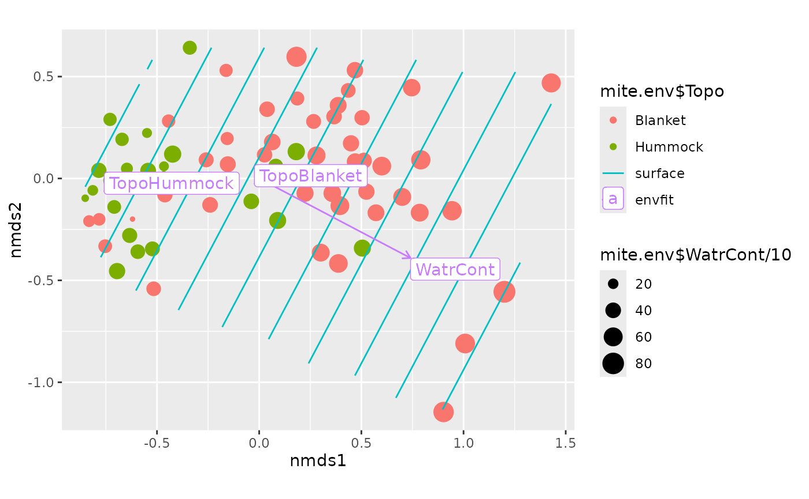

Function adds a point layer using ggplot2::geom_point() to an
ordiggplot() graph.
Arguments
- score
Ordination score to be added to the plot.
- data
Alternative data to the function that will be used instead of
score.- ...
other arguments passed to
ggplot2::geom_point()
Examples
library(vegan)
library(ggplot2)
data(mite, mite.env, package = "vegan")
mod <- metaMDS(mite, trace = 0)
surf <- vegan::ordisurf(mod ~ WatrCont, mite.env, plot = FALSE)
ef <- vegan::envfit(mod ~ WatrCont + Topo, mite.env)
## Change sizes and colours of points
ordiggplot(mod) +
geom_ordi_point("sites",
mapping=aes(colour = mite.env$Topo, size=mite.env$WatrCont/10)) +
autolayer(surf) +
autolayer(ef, box = TRUE)
